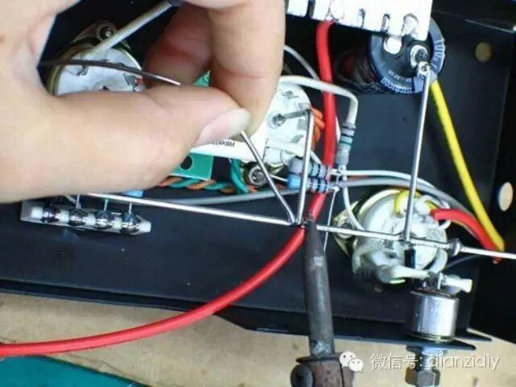
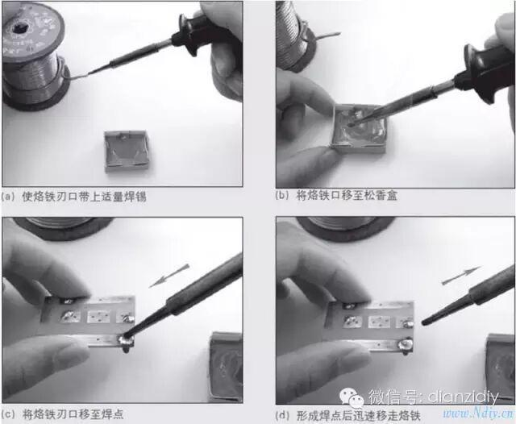
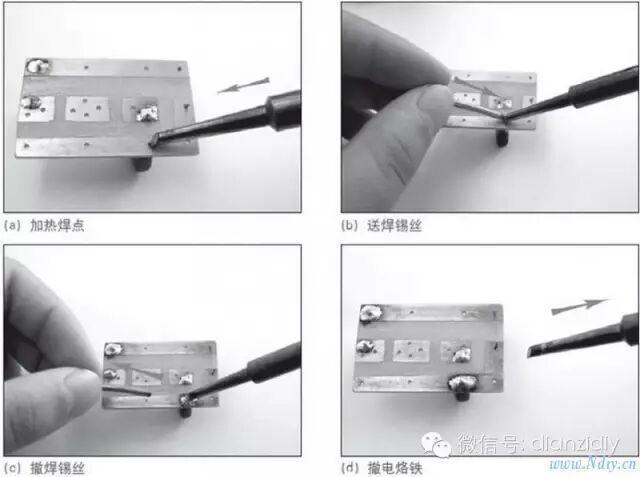
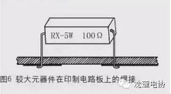
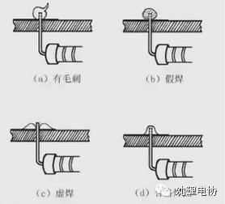
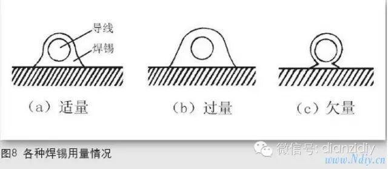

使用小程序

电子制作是一项让制作者既动手又动脑的非常有趣的科技实践活动。电子制作并不神秘，入门也不难。但它既然是一门科学，也就不是马马虎虎、不费气力可以学会的。初学电子制作不仅要学习一些基本的知识，更重要的还要掌握一些最基本的操作技能，这样才能动手进行制作，才能取得预期的效果。
大家都知道，在电子制作中，元器件必须依靠
焊接
，才能有可靠的电气连接，并得到支撑和固定。焊接是电子爱好者对焊锡工艺的称呼，焊接的过程就是用电烙铁使焊料（焊锡）熔化，并借助焊剂（如松香）的作用，将电子元器件的端点与导线或印制电路板等牢固地结合在一起。对焊点的要求是连接可靠、导电大家知道，在电子制作中，各个良好、光洁美观。
用电烙铁焊接是电子制作的基本技能之一。良好的焊接是电子制作成功的重要保证；反过来说，焊接不良，往往会使制作失败，甚至损毁元器件。看起来焊接操作简单、容易，但要真正掌握焊接技术，焊出高质量的焊点，却并不那么容易。为使初学者快速熟练地掌握焊接基本功，笔者结合多年来的实践经验讲述焊接方法、经验和技巧，希望读者能够认真阅读领会，并多进行焊接练习，不断提高焊接水平。
焊接基本操作
常用的焊接方法主要有带锡焊接法和点锡焊接法两种，分别见图1、图2。带锡焊接法的好处是可以腾出左手来抓持焊接物，或用镊子（尖嘴钳）夹住元器件焊脚根部帮助散热，防止高温损坏元器件。另外，所用焊锡不一定非要用带有松香芯的焊锡丝，普通焊锡都可以。一般在焊接点不是太多或焊接小物件的情况下，此法显得很方便。点锡焊接法具有焊接速度快、焊接质量高的特点，它适用于多元器件快速焊接。但注意所用焊锡丝必须要有松香芯，否则易出现焊点不粘锡现象。所选焊锡丝的直径应根据焊点的大小确定，一般以直径为0.8mm或1mm粗细的为宜。

一刮：刮就是焊接前要按照图3所示，做好被焊金属物表面的清洁工作，可用小刀、废钢锯条等刮去（或用细砂纸打磨掉、用粗橡皮擦除）焊接面上的氧化层、油污或绝缘漆，直到露出新的金属表面。自制的印制电路板在焊接前，也需要用细砂纸或水砂纸仔细将覆铜箔的一面打亮。"刮"是保证焊接质量的关键步骤，却常常被初学者所忽视，刮不到位，就镀不好锡，也不好焊接。需要说明的是，有些元器件引线已经镀银、金或经过搪锡，只要没有氧化或剥落，就不必再去刮它，如表面有脏物，可按照图3（c）所示用粗橡皮擦除。粗橡皮的选择以绘图用的大橡皮效果最好。有些镀金的晶体三极管管脚引线等，在刮掉镀层后反而会难以镀上锡。无论采取何种形式的"刮"，都要注意不断旋转元器件引脚，务求将引脚的四周一圈全部清洁干净。
二镀：镀就是按照图4所示，对被要焊接的部位进行搪锡。"刮"完的元器件引脚、导线头等焊接部位，应立即涂上适量的焊剂，并用电烙铁镀上一层很薄的锡层，以防表面再度氧化，以提高元器件的可焊性。镀的焊锡层要求又薄又均匀，为此烙铁头上每次的带锡量不要太多。怕烫的晶体二极管、晶体三极管等元器件，事先一定要按照图4（b）所示，用镊子或尖嘴钳夹住引线脚根部帮助散热，再进行镀锡处理。元器件搪锡是焊接技术中防止虚焊、假焊等隐患的重要工艺步骤，切不可马虎。
三测：测就是对搪过锡的元器件进行检查，看元器件在电烙铁高温下外观有无烫损、变形、搭焊（短路）等。对于电容器、晶体管、集成电路等元器件，还要用万用电表检测其质量是否可靠，发现质量不可靠或者已损坏的元器件决不能再用。

图3一刮
图4二镀


五查：查就是对焊好的电路进行一次焊接质量的检查，焊点不应有假焊、虚焊及断路、短路，特别是电解电容器、晶体管等有极性元器件的管脚是否焊接正确。焊接质量好坏可通过焊点的颜色与光泽、扩散程度、焊锡量三个方面加以判别。良好的焊接，焊点具有独特的亮白光泽，凭经验一眼就能看出；如果焊锡的颜色和光泽出现污点或表面有凹凸不平，就表明焊接不良。而焊锡在附着物表面的扩散程度，同样可以判定焊接质量的优劣，在图7所示的图形中，图7（a）表示优良的焊接状态，图7（b）是介于好与差之间的状态，图7（c）是渗透不足的油炸饼状态。至于焊点的焊锡量，可参照图8所示的在印制电路板上焊接导线时，使用焊锡量的标准图形来判定。图8（a）是焊好后焊锡形成缓缓上升的山坡状，由焊锡表面即可判定导线的确切位置，表示焊锡量适当。图8（b）是焊锡量过多的情况。过多的焊锡堆积，不仅无法达到增加机械强度的预期目的，还有发生虚焊现象、与附近焊点相碰（短路）的危险。图8（c）则是焊锡量不足的情况。这种情况在焊接初期并不容易看出有什么缺陷，但经过一段时间后，可能会因震动或拨动而脱落。对于有问题的不良焊点，应采取补焊措施，使焊接质量达到满意程度。

信息部\张晋鹏